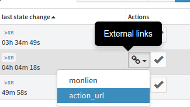
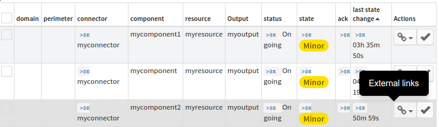
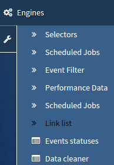
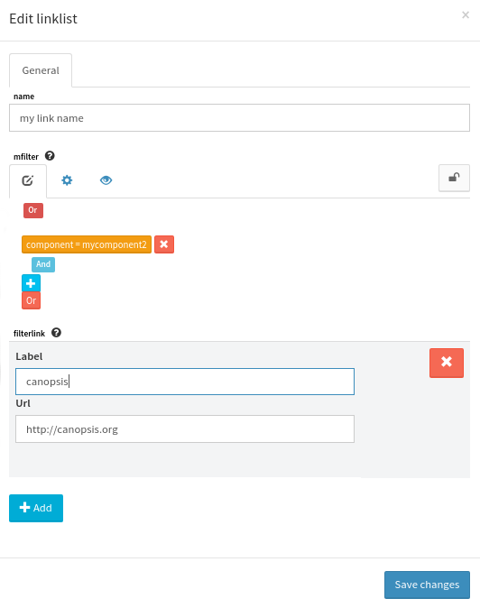

Linklist¶
Overview¶
The link list feature aims to associate links to Canopsis entities. This is done by different following ways:
- Canopsis receives an event that contains a specific key such as action_url that may be equal to http://canopsis.org
- A Canopsis user defines relations between Canopsis entities and some urls that have to be associated to them.
In the end, the final user will be able to see a list of link associated to a specific event as shown in the picture below:
 Rights¶
The linklist feature comes with a right management system. Link list actions are enabled if the user is allowed for the actionbutton_canediturlfield right. This right allow to schedule a new linklist computation task and to create a rule for link list computation.
How to associate links¶
Link association can be done into the link list view, witch is reachable from the engine menu.
Once in the link list configuration view, click create button.
In the form, select entities that have to be associated to the link list that you have to fill below by editing a filter. A link is made of a label and an url.
Once done, link list are ready to be computed. The only left action to perform is to trigger a link association computation thanks to the scheduled job system. for more information about the job system go to scheduled jobs
Note
TODO: a good link for a user guide for scheduled jobs